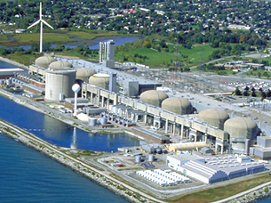

What do you know about nuclear technology? Is there more to nuclear technology than bombs? Have you or someone you know ever had an X-ray, ultrasound, CT scan, or MRI? Have you ever heard of “The Manhattan Project,” the “Trinity Test,” or the “Cuban Missile Crisis”? What about the use of nuclear weapons during World War II or the incidents at Three Mile Island and Chernobyl? Do you, your family, or your community have an opinion about nuclear technology? Do you know anyone who has been directly affected by nuclear technology? If so, was the experience positive or negative?
Use the interactive timeline to view some important events in the history of nuclear technology.

Copyright © 2005 Ontario Power Generation Inc., all rights reserved. This information is subject to the general terms of use set out in Ontario Power Generation Inc.’s web site (www.opg.com).
The history of nuclear power in Canada begins in the 1940s with the development of the ZEEP (Zero Energy Experimental Pile) reactor. On September 5, 1945, ZEEP became the first active nuclear reactor outside of the United States. Its purpose was to allow scientists to carry out nuclear experiments and to test the viability of nuclear power. Canada’s experimentation with the ZEEP reactor led to the development of the CANDU (CANada Deuterium Uranium) reactor in the 1960s. In 2006, there were approximately 37 active CANDU reactors in countries around the world, including Canada, South Korea, China, India, Argentina, Romania, and Pakistan.